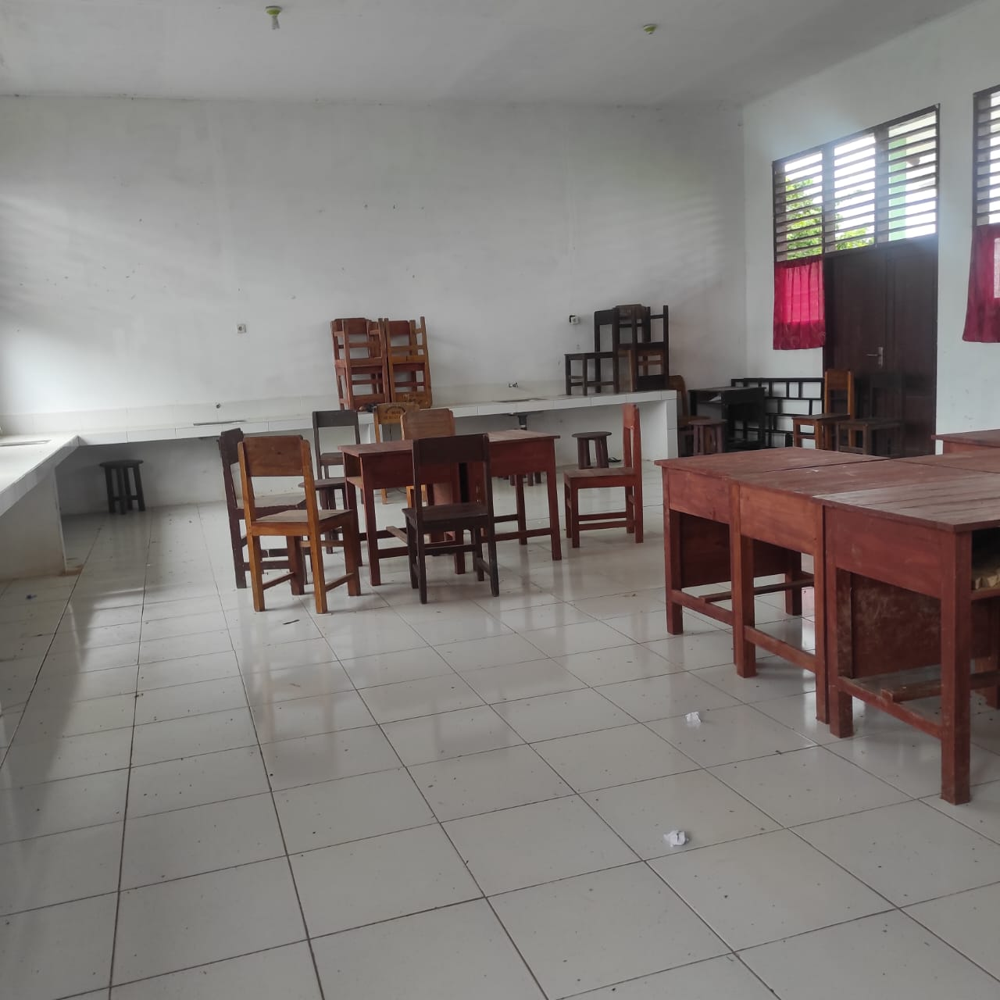

Ruang Biologi SMAN 1 Lasalimu Selatan
Ruang biologi di SMAN 1 Lasalimu selatan sudah memiliki fasilitas yang cukup untuk melakukan praktek pada saat ujian semester. fasilitias yang ada seperti meja praktikum ,mikroskop yang digunakan untuk mengamati sel atau jaringan.Peralatan laboratorium seperti tabung reaksi, gelas ukur, pipet, dan perlengkapan lainya. Model anotomi seperti organ tubuh manusia dan hewan.